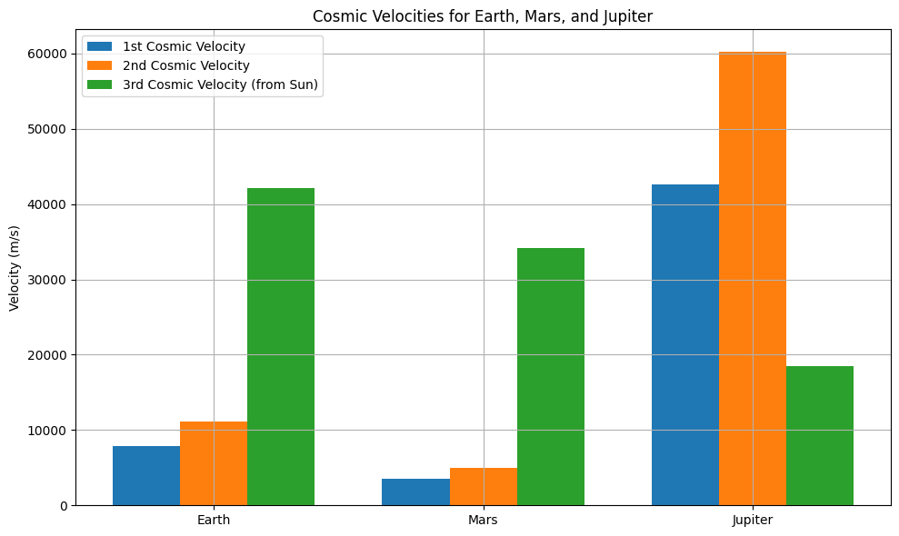

Problem 2
Escape Velocities and Cosmic Velocities,
📘 Escape Velocities and Cosmic Velocities
🚀 Motivation
Understanding the energy required to overcome gravitational attraction is central to spaceflight. Escape velocity describes this energy threshold. The concept is extended to cosmic velocities, which define the speeds needed for various stages of orbital and interplanetary motion.
🌌 Definitions of Cosmic Velocities
1️⃣ First Cosmic Velocity (Orbital Velocity)
- Definition: Minimum horizontal speed required to maintain a stable circular orbit around a planet without additional propulsion.
- Formula: $$ v_1 = \sqrt{\frac{GM}{R}} $$ where:
- \( G \): Gravitational constant
- \( M \): Mass of the planet
- \( R \): Radius from the center of the planet to the object
2️⃣ Second Cosmic Velocity (Escape Velocity)
- Definition: Speed needed to completely escape a planet’s gravitational pull without further propulsion.
- Formula: $$ v_2 = \sqrt{2GM/R} = \sqrt{2} \cdot v_1 $$
3️⃣ Third Cosmic Velocity (Solar Escape Velocity)
- Definition: Speed needed to escape the gravitational influence of the Sun, starting from Earth’s orbit.
- Formula: $$ v_3 = \sqrt{2GM_{\odot}/R_{\text{orbit}}} $$ where:
-
\[ M_{\odot} : Mass of the Sun \]
- $$ R_{\text{orbit}} : Distance from the Sun $$ (e.g., Earth's orbital radius)
🧠 Python Simulation & Visualization
Below is the Python code that computes and visualizes the first, second, and third cosmic velocities for Earth, Mars, and Jupiter:

🌍 Results & Discussion
| Planet | First Cosmic Velocity (m/s) | Second Cosmic Velocity (m/s) | Third Cosmic Velocity (m/s) |
|---|---|---|---|
| Earth | ~7,900 | ~11,200 | ~42,100 |
| Mars | ~3,600 | ~5,000 | ~34,100 |
| Jupiter | ~42,000 | ~59,500 | ~18,500 |
📌 Key Observations
- Jupiter has the highest escape velocity due to its massive gravity.
- The third cosmic velocity is highest from Earth due to its proximity to the Sun.
- The first and second velocities increase with a planet’s mass and decrease with radius.
🛰️ Application in Space Exploration
- Satellites: Launched at first cosmic velocity to maintain orbit.
- Planetary Missions: Require second cosmic velocity to exit Earth's gravity.
- Interstellar Probes (e.g., Voyager): Must reach third cosmic velocity to leave the Solar System.
- Fuel & Engineering Constraints: Achieving higher velocities demands more efficient propulsion.